MASKLESS LITHO v2.1
English operator manualA practical operator manual for PLANCK INC's MASKLESS LITHO Windows desktop software.
A clear, workflow-first manual for running MASKLESS LITHO.
This English version is written from the current v2.1 codebase and the latest UI captures. It explains how to load images and GDS files, align the pattern, apply UV Keystone correction, draw CAD geometry, and run exposure sequences safely.
LED ON automatically applies the active UV Keystone profile when the profile is APPLIED (ON). If UV Keystone is disabled or no profile is loaded, it uses the raw image.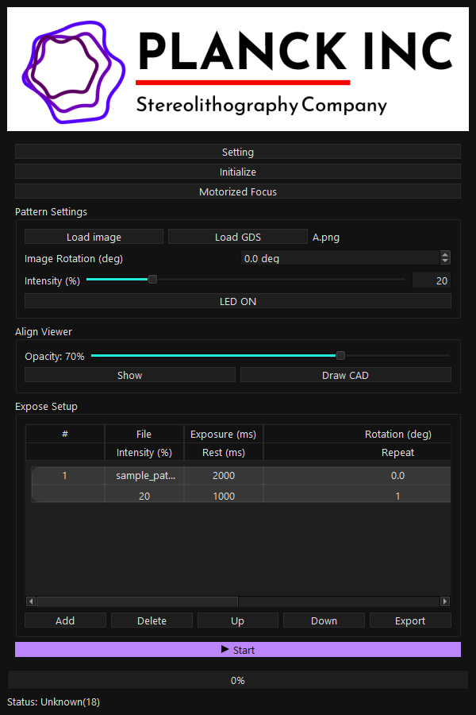
Quick Start
Use this path for a first safe exposure. Confirm the DLP display, TEST Mode, and intensity before placing a real sample under UV output.
- Run
dist\maskless_v2_1.exe. - Open
Setting > Display, select the DLP monitor, and pressApply. - For UI-only checks without hardware, enable
Setting > Expose > TEST Mode. Before real exposure, verify that TEST Mode is in the intended state. - Load a pattern with
Load image, or convert a layout withLoad GDS. - Press
Align Viewer > Showand place the overlay on the microscope/camera view. - Use
Align Wizardfor camera-view alignment andUV Keystone Calibrationfor actual DLP output distortion correction. - If using UV Keystone, confirm that
Setting > Align ViewshowsAPPLIED (ON). - Add the current pattern to
Expose Setup, verify Exposure, Rotation, Intensity, Rest, and Repeat, then pressStart.
- Confirm that the selected display is the DLP output, not the operator monitor.
- Check whether intensity is in percent or in LUT-calibrated optical power units.
- Check the UV Keystone status in
Setting > Align View. - If anything looks wrong, press
Stopfirst and confirm that the DLP output returns to black.
Safety
UV and DLP output directly affects the sample and hardware. In v2.1, check manual LED output, sequence state, CAD exposure, and UV Keystone state before exposing a sample.
LED ONdisplays the current pattern on the DLP and starts manual LED output.- If UV Keystone is
APPLIED (ON),LED ONprepares the corrected image first. If correction fails, the LED is not started. - If UV Keystone is disabled or no profile is loaded,
LED ONuses the raw image. Startsequences andCAD Expose Nowclear manual output and run safety checks before controlled exposure.- In Anti-vibration mode, long manual LED output can trigger the 60-second overheat protection. Use only the time needed.
- Motorized Focus is blocked while a sequence is running, CAD Expose is running, or manual LED output is active.
- GDS Import is blocked during a running sequence or while manual LED output is active.
- Draw CAD requires a loaded image, a configured DLP display, and an open Align View.
- UV Keystone Calibration requires the selected monitor to be 1920 x 1080.
Install/Run
Run the release executable for normal operation. Use the development commands only when working from source.
cd C:\GitProjects\MASKLESSLITHO
dist\maskless_v2_1.exeThe v2.1 release build is maskless_v2_1.exe. The release ZIP is expected to contain this single executable.
cd C:\GitProjects\MASKLESSLITHO
.\venv64\Scripts\python.exe main.pyInstall requirements first on a new PC. GDS Import requires gdstk.
python -m venv venv64
.\venv64\Scripts\python.exe -m pip install -r requirements.txt.\venv64\Scripts\python.exe build_exe.pyMotorized Focus is launched through the same EXE in internal mode:
maskless_v2_1.exe --motorized-focusMain Window
The main window collects device initialization, pattern loading, alignment, CAD drawing, and exposure sequence controls in one vertical workflow.
| Area | Purpose | What to verify in v2.1 |
|---|---|---|
Setting | Device, display, alignment, exposure settings | DLP display, TEST Mode, UV Keystone Enable/Disable |
Initialize | Power-on initialization for the DLP controller | Use TEST Mode when checking the UI without hardware |
Motorized Focus | Launch the focus control window | Blocked during exposure or manual LED output |
Pattern Settings | Load image/GDS, set rotation and intensity, run manual LED output | LED ON uses corrected or raw output according to UV Keystone state |
Align Viewer | Overlay the pattern on the microscope/camera image | Entry point for Draw CAD and alignment workflows |
Expose Setup | Create and run exposure sequence rows | Intensity columns change meaning when Calibration is enabled |
Pattern Settings
Pattern Settings controls the current pattern image, rotation, intensity, and manual LED output.
Load image: Load a PNG, BMP, or JPG pattern image.Load GDS: Convert a .gds or .gds2 layout into a DLP-ready PNG through GDS Import Settings.Image Rotation (deg): Rotate the loaded pattern.Intensity (%): Set DLP LED output intensity. With Calibration enabled, the UI can map this through a lens LUT.LED ON: Display the current pattern on the DLP and start manual LED output. If UV Keystone isAPPLIED (ON), the corrected image is used; otherwise the raw image is used.- When LED output is active, the button text changes to
LED OFF. Press it again to stop output and restore a safe state.
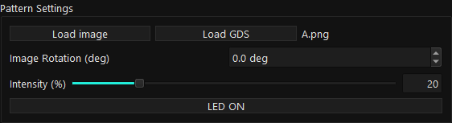
- Load the pattern with
Load imageorLoad GDS. - Confirm that the filename changes from
N/Ato the loaded file. - Set rotation and intensity.
- Use
LED ONfor manual output. UV Keystone correction is controlled bySetting > Align View.
Manual LED ON
Manual LED ON displays the current pattern on the DLP and starts manual LED output. In v2.1, UV Keystone handling and status timing were stabilized.
| State | Output | Check before use | Failure behavior |
|---|---|---|---|
UV Keystone: APPLIED (ON) | Corrected image is prepared, displayed on the DLP, then LED output starts. | Profile resolution and DLP display selection | Stops before LED ON if correction fails |
NOT APPLIED or no profile | Raw loaded image is displayed on the DLP, then LED output starts. | Sample position, intensity, and TEST Mode state | Restores state if current setting or LED ON fails |
- Immediately after pressing the button, the status changes to
Status: Manual LED starting.... - After LED ON succeeds, the status starts at
Status: Manual exposing... 0.000sand updates every 0.1 seconds. - With Anti-vibration enabled, the fan is turned off first and LED ON is attempted about 500 ms later.
- While manual LED output is active, conflict-prone actions such as Motorized Focus and GDS Import are blocked.
Keystone Preview / Expose button. UV Keystone correction is controlled from Setting > Align View with the profile status and Enable/Disable buttons.Motorized Focus
Motorized Focus is launched from the main window and still uses the single-EXE internal mode in v2.1.
- Location: the
Motorized Focusbutton directly belowInitialize. - Internal launch mode:
maskless_v2_1.exe --motorized-focus. - No separate
Motorized_Focus.exeis required for deployment. - Focus launch is blocked while sequence exposure, CAD exposure, or manual LED output is active.
- If Focus is already running, the software reports that state instead of launching another copy.
Align Viewer
Align Viewer places the pattern overlay on top of the microscope/camera view so the operator can align position, size, and transparency.
Opacity: Adjust overlay transparency.Show: Show or hide Align View.Draw CAD: Open CAD View using the current aligned image plane.- Move or resize the Align View window to match the microscope/camera image.
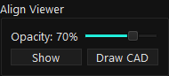
- Align View aligns what the operator sees on screen.
- UV Keystone corrects the actual DLP output distortion.
- Draw CAD requires a loaded image, a configured DLP display, and Align View opened with
Show.
Align Wizard
The v2.1 Align Wizard opens with UV Keystone profile controls first. Manual 1/2/4-point alignment is under Advanced.
UV Keystone Calibration: Open the full-field calibration wizard.KEYSTONE CALIBRATION: Shows the current profile status.Import: Import and activate a.maskkeystoneprofile from another PC.Export: Export the active profile for transfer or backup.Advanced: Reveal manual 1/2/4-point Align View controls.
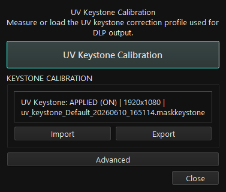
Use Advanced only when you need semi-automatic screen alignment. Pick matching points on the microscope/camera view and Align View, press Preview Calculate, then press Apply.
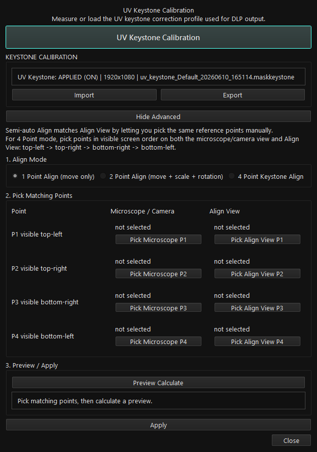
UV Keystone Calibration
UV Keystone Calibration corrects the actual UV pattern projected through the DLP optical path. It is not the same as aligning the on-screen overlay.
- Align View is not required.
- Step 1/2 measures four outer points for global correction.
- Step 2/2 measures the remaining thirteen fine points.
- Each visible UV point is clicked four times on the microscope/camera screen.
- When finished, the software saves and activates a
.maskkeystoneprofile. - Before starting, the selected DLP monitor must be 1920 x 1080 native, and the main/camera monitor must match the DLP monitor native resolution.
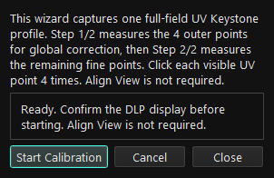
- Select the 1920 x 1080 DLP monitor in
Setting > Display. - In Windows Display Settings, match the main/camera monitor and DLP monitor resolution and scaling.
- Open
Align Wizard > UV Keystone Calibration. - Press
Start Calibration. - For each projected point, click the center of the visible UV point four times.
- After all 17 points, a corrected verification pattern is displayed on the DLP while LED output remains off for safety.
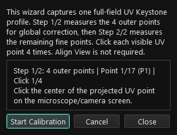
UV Keystone: NOT APPLIED | no profile: no profile is available.UV Keystone: APPLIED (ON) | 1920x1080 | file.maskkeystone: correction is enabled.UV Keystone: NOT APPLIED (OFF) | ...: a profile exists, but correction is disabled.Enable UV Keystoneturns the active profile on.Disable UV Keystoneturns correction off without deleting the profile.- Manual
LED ON, sequences, and CAD Expose Now use this state to decide whether correction is applied.
GDS Import
GDS Import now uses an interactive crop frame. The operator can choose exactly which real-size GDS area becomes the 1920 x 1080 DLP PNG.
Cellandpolygons: the selected GDS cell and polygon count.GDS bounds,GDS size, andcenter: real layout dimensions.DLP frame: the physical size covered by the 1920 x 1080 DLP frame at the current CAD scale.- White rectangle: selected GDS bounds.
- Yellow rectangle: the DLP crop frame.
Frame check: confirms whether selected geometry is inside the frame and estimates visible pixel span.
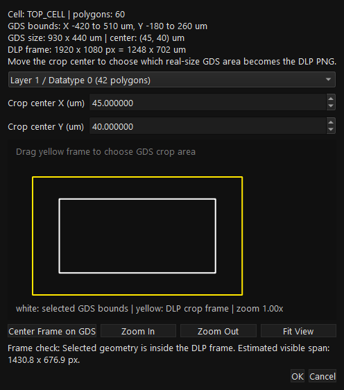
- Save the CAD scale profile for the current lens.
- Apply the DLP display in
Setting > Display. - Press
Load GDSand choose a .gds or .gds2 file. - Select the layer/datatype.
- Drag the yellow frame, or type
Crop center X/Y (um). - Use
Zoom In,Zoom Out, andFit Viewto inspect the preview. - Use
Center Frame on GDSto reset the frame to the selected layer center. - Press
OKwhen Frame check confirms that geometry is inside the DLP frame.
No selected GDS geometry inside the current DLP frame.: move the yellow frame or change the crop center.Geometry intersects the frame but may be smaller than one pixel.: use a finer CAD scale.Selected GDS geometry is outside the DLP area...: check scale, origin, and crop center.Selected GDS geometry produced no visible pixels.: re-check layer/datatype, frame, and scale.
Draw CAD
Draw CAD lets the operator create editable CAD geometry on the same image plane used by Align View.
Select: select, move, and edit shape handles.Rect,Ellipse,Line,Polyline,Polygon: create exposure geometry.Measure: measure distance and angle. Measurement marks are not exposed.Grid Snap: snap points to a specified um grid.W um,H um,Stroke um: define real-world size and line width.
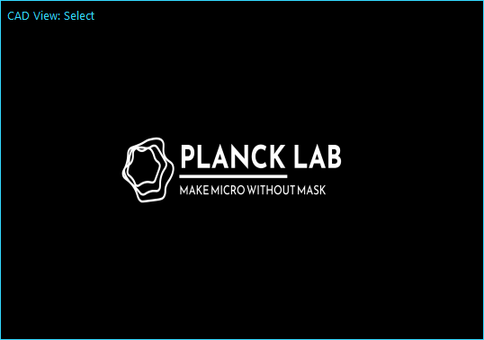
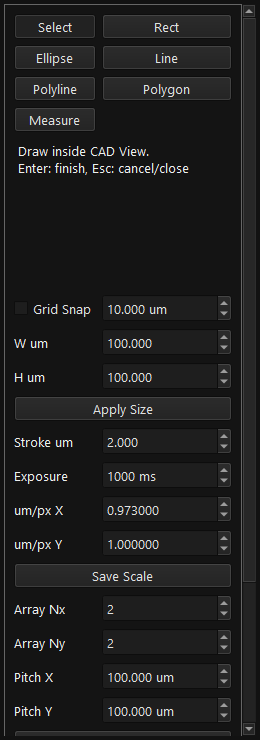
- Load an image first.
- Apply the DLP display.
- Open Align View with
Show. - Move Align View off the DLP display before drawing.
- Save the scale for the current lens with
Save Scale.
CAD Output
The lower Draw CAD controls save, export, apply, or expose the CAD result.
Save CAD: save an editable.maskcaddocument.Load CAD: reopen a saved.maskcaddocument.Export PNG: save a DLP-resolution PNG and paired.maskcad.Apply: load the rendered PNG into main Pattern Settings.Expose Now: expose the current CAD result once after confirmation.Include Base Image: render CAD geometry over the loaded base image.
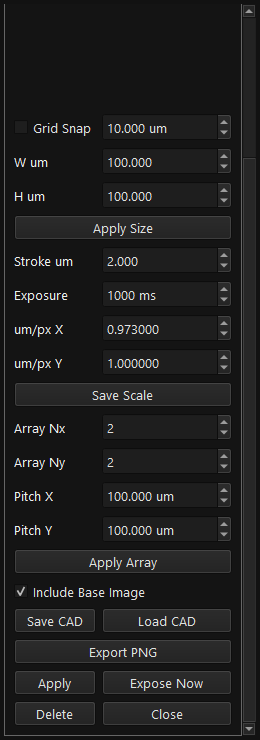
Expose Setup
Expose Setup builds the sequence table used for one or more exposure steps.
Add: add the current loaded pattern.Delete: remove the selected row.Up/Down: reorder rows.Export: export the sequence list.Start,Next,Stop: run, advance, or stop the sequence.- Columns include File, Exposure (ms), Rotation (deg), Intensity, Rest (ms), and Repeat.
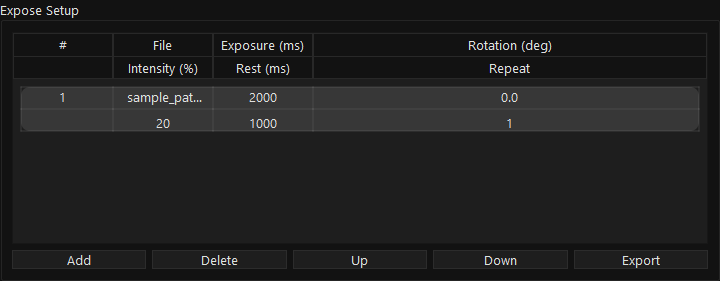
- Re-check Exposure, Intensity, Repeat, and Rest before pressing
Start. - If UV Keystone correction fails, the software stops before LED ON instead of hiding the failure with a black fallback image.
- When the setup is locked during a run, press
Stopbefore editing sequence rows.
Calibration LUT
Calibration LUT maps intensity input through a lens-specific calibration table.
- Open
Setting > Expose. - Press
Loadto load the LUT file. - Enable
Calibration. - Select the lens profile when the lens dropdown appears.
- Confirm that the intensity meaning in Pattern Settings and Expose Setup matches the Calibration state.
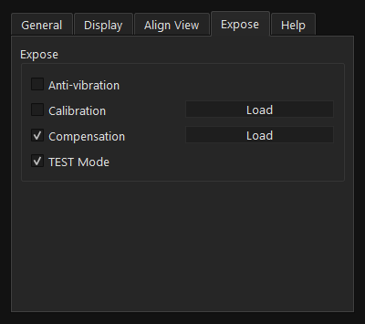
Expose contains Calibration, Compensation, and TEST Mode." loading="lazy">Compensation
Compensation applies a loaded mask image to the output. It is separate from LUT calibration and UV Keystone correction.
- Location:
Setting > Expose. Compensation: enable or disable the loaded compensation mask.Load: load a.maskcompensation image.- Calibration changes intensity mapping, Compensation changes the image, and UV Keystone changes geometric output correction.
Settings
Settings contains device controls, DLP display selection, Align View/UV Keystone controls, exposure calibration, compensation, and TEST Mode.
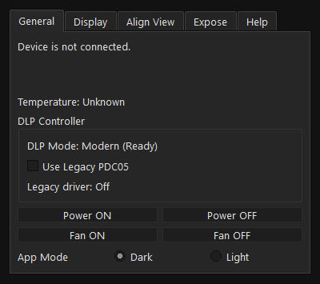
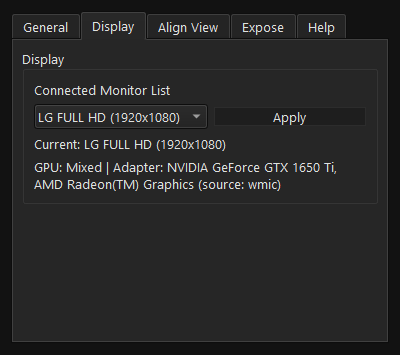
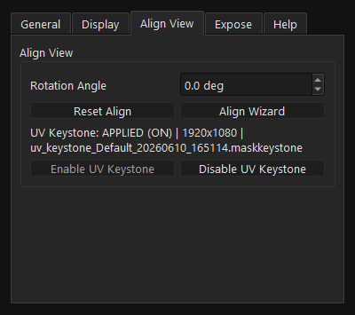
Legacy DLP
Use Legacy DLP mode only for older PDC05 DLP controller environments.
- Location:
Setting > General > Use Legacy PDC05. - The default mode is the modern DLP controller mode.
- Do not switch DLP mode during exposure. Press
Stopand return the output to a safe state first. - Some functions may be limited in Legacy mode depending on the old DLL and hardware support.
TEST Mode
TEST Mode is for UI flow checks without connected DLP hardware.
- Open
Setting. - Go to the
Exposetab. - Enable
TEST Mode. - Check image loading, GDS Import, Align View, Draw CAD, and Expose Setup workflows.
- Before real exposure, verify that TEST Mode is in the intended state.
Data Paths
These are the main user data locations used by MASKLESS LITHO.
| Item | Location | Purpose |
|---|---|---|
| Config | %USERPROFILE%\.maskless_v2\config\config.json | Display, LUT, CAD scale, UV Keystone state |
| LUT copy | %USERPROFILE%\.maskless_v2\config\lut.dat | Calibration LUT copy |
| Compensation | %USERPROFILE%\.maskless_v2\config\compensation.mask | Compensation image copy |
| Logs | %USERPROFILE%\.maskless_v2\logs\ | app_info.log and app_error.log |
| CAD/GDS PNG | %USERPROFILE%\.maskless_v2\cad\ | Default output for CAD and converted GDS PNG files |
| UV Keystone | %USERPROFILE%\.maskless_v2\keystone\*.maskkeystone | Full-field correction profiles |
Troubleshooting
Start with Stop, the DLP display selection, TEST Mode, UV Keystone state, scale profiles, and logs.
| Symptom | Likely cause | What to do |
|---|---|---|
| No DLP output | Display not applied, TEST Mode, hardware connection | Apply the DLP display, check TEST Mode, then review logs |
| LED ON does not apply correction | UV Keystone OFF, no profile, or profile resolution mismatch | Check that Setting > Align View shows APPLIED (ON) and a 1920 x 1080 profile |
| LED ON stops with a UV Keystone warning | Correction failed or profile resolution mismatch | Check 1920 x 1080 DLP display, profile status, and app_error.log |
| GDS output is blank | Geometry outside crop frame or wrong scale | Move the yellow frame and confirm Frame check |
| Draw CAD will not open | No image, no DLP display, or Align View not open | Load an image, apply Display, press Align Viewer Show |
| Motorized Focus will not open | Sequence, CAD exposure, or manual LED output is active | Press Stop or LED OFF first |
| Intensity units look wrong | Calibration LUT state changed | Check Calibration and lens selection in Setting > Expose |
Release Notes v2.1
The English manual reflects these current release behaviors.
- Release build:
maskless_v2_1.exe. - v2.0.10 hotfixes were consolidated into the v2.1 stable release.
LED ONapplies UV Keystone correction when the profile is enabled, and uses raw output when correction is disabled or unavailable.- Manual LED status now shows
Manual LED starting..., thenManual exposing... 0.000safter LED ON succeeds. - UV Keystone correction failure stops before LED ON and shows a warning.
- UV Keystone Calibration now guards the DLP monitor and main/camera monitor native resolutions before starting.
- GDS Import Settings adds an interactive DLP crop frame, Crop center X/Y, Zoom In/Out, Fit View, and Center Frame on GDS.
- UV Keystone status uses
APPLIED (ON)andNOT APPLIED (OFF). Enable UV KeystoneandDisable UV Keystonetoggle correction without deleting the saved profile.Clear UV Keystoneis no longer shown in the normal operator screen.- Align Wizard now emphasizes UV Keystone Calibration, Import, and Export, with manual Align controls under Advanced.